Laplace NS 使用指南
目录
- 开始使用打开和安装界面「组」：每页都可以存好几份输入数字的小技巧
- 击破概率基本用法：4 张卡打一个敌人伤害维度：卡多于 4 张或少于 4 张AOE：同时打死好几个敌人SL：没打死可以重来几次图表：HP 再高一点还能打死吗？
- 发牌概率基本用法：第 1 回合要发到 BB包含 / 仅含、不限 / 不能有连续几个回合：1–2 回合、1–3 回合多名从者、纹章「或者」：几种发牌都能接受计算过程
- buff 成功率普通 buff二项分布 buff：一个技能判定好几次两个结果分别用在哪
- 送人概率基本用法：一个敌人、送走一名从者敌人的更多设置我方的更多设置看结果：SL 表和详细结果受击要求：要挨几下（攒 NP、触发被动）
- 综合击破概率基本用法：把组放进回合加上 buff 和送人按条件分配：不同的牌用不同的打法额外 SL 和全局额外 SL计算过程
- 工作目录与分享工作目录：保存整套设置导出：发给别人或备份导入别人的设置分享图片：发一张结果截图
- 常见问题
Laplace NS（Laplace Next Station）是一个算概率的小工具：一回合能不能打死、能不能发到想要的牌、buff 能不能挂上、敌人能不能把指定的从者送走，以及把这些串成整个多回合方案的综合成功率。所有计算都在你自己的设备上完成，不上传任何数据。
截图里的数字都是随手编的示例，只用来说明怎么操作。
开始使用
打开和安装
- 网址：https://ada-yl5326.github.io/fgo-prob-calc/
- iPhone：用 Safari 打开 →「分享」→「添加到主屏幕」。之后从桌面图标打开，像 App 一样全屏使用，断网也能用。
- 安卓：浏览器菜单 →「添加到主屏幕」或「安装应用」。
- 有新版本时，页面顶部会出现「新版本已下载，点此刷新」，点一下就是最新版。
iPhone 上从桌面图标打开和在 Safari 里打开，保存的数据可能是分开的；删掉桌面图标再重新添加，图标里保存的组会一起清空——重要的内容请先用工作目录导出备份。
界面
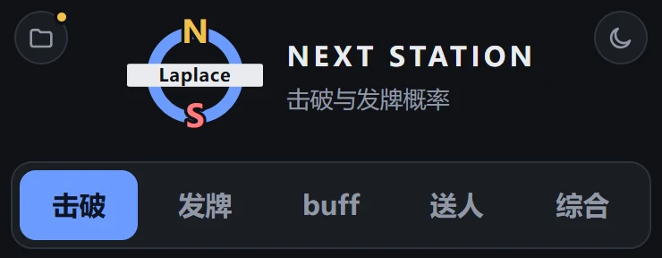
- 左上角 工作目录：保存、切换、导出 / 导入整套设置，见工作目录与分享。
- 右上角切换外观：自动（跟随系统）→ 浅色 → 深色。
- 五个页面：击破（一回合的击破率）、发牌（发到想要的牌的概率）、buff（buff 成功率）、送人（敌方行动阶段把从者送走的概率）、综合（把前面四种组合成整个方案）。
「组」：每页都可以存好几份
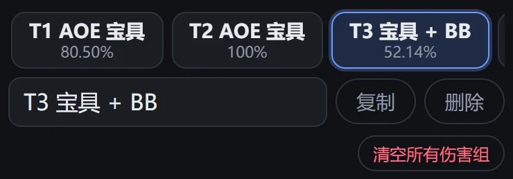
前四个页面的输入都存成「组」（伤害组、发牌组、buff 组、送人组）。常见用法是每个回合一组、每种打法一组。
- 点组的名字切换；「＋ 新建」新建一个空组；「复制」复制当前组（改一点数字做对比时最方便）。
- 名字框里直接改名（最多 20 个字）；「删除」删除当前组；「清空所有X组」只留下一个空组。
- 组名下面的小字是这个组的结果，不用点进去就能看到。
- 所有输入都会自动保存在这台设备上，关掉页面再打开还在。
输入数字的小技巧
- 可以带千分位逗号，也可以用全角数字，输入完会自动整理成
98,000这样的格式。 - 百分比直接填数字，例如成功率 65% 填
65。 - 填完一格按键盘上的「下一项 / 换行」会跳到下一格。
- 输入有问题时，格子下面会显示红色的说明。
击破概率
算一回合打出去的伤害能不能击破敌人：每一张卡（每个「伤害维度」）的伤害都会在 0.900 ~ 1.099 的随机数里单独抽一次，这一页统计全部组合，给出精确的击破率。
基本用法：4 张卡打一个敌人
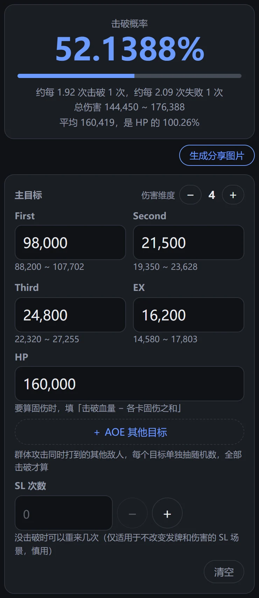
- 在 First / Second / Third / EX 填每张卡的均伤（伤害计算器里不含随机数的那个平均伤害）。不出的卡留空。
- HP 填敌人剩下的血量。
- 最上面立刻显示击破率，下面还有「约每几次击破一次」、总伤害的范围和平均值。
每张卡下面的小字是这张卡的伤害范围（均伤 × 0.9 ~ 均伤 × 1.099）。
有固伤时：固伤不乘随机数，所以不要加进均伤里。HP 改填「击破血量 − 各卡固伤之和」即可，结果完全一样。
伤害维度：卡多于 4 张或少于 4 张
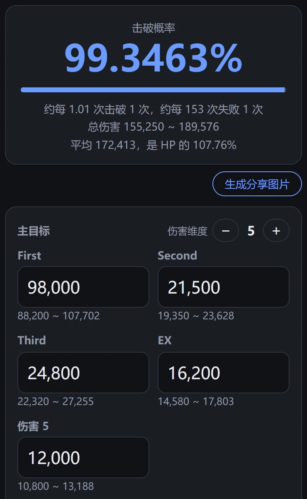
每个单独抽随机数的伤害算一个「维度」。主目标默认 4 维，用右上角的 − / ＋ 改成 1 ~ 12 维：
- 只放一发宝具：改成 1 维。
- 宝具后还有追加伤害、额外攻击等单独计算随机数的伤害：加一维填进去。
6 维以内是精确值；维度多、伤害高时要算一会儿，停止输入后才开始算。
AOE：同时打死好几个敌人
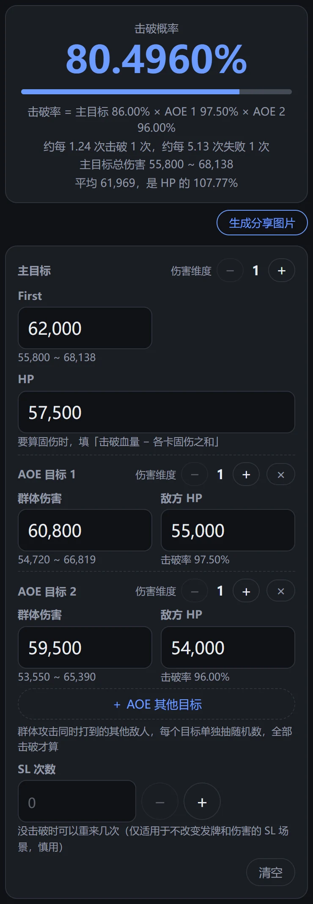
群体宝具要清掉一整排时：
- 主目标填宝具打主目标的伤害（这里把伤害维度改成 1）和它的 HP。
- 点「＋ AOE 其他目标」，每行填宝具打到这个敌人的伤害和它的 HP，最多 5 个。
- 每个目标单独抽随机数，全部击破才算成功：击破率 = 主目标 × 各 AOE 目标的击破率。每个 AOE 目标下面会显示它自己的击破率，方便找出最危险的那个。
SL：没打死可以重来几次
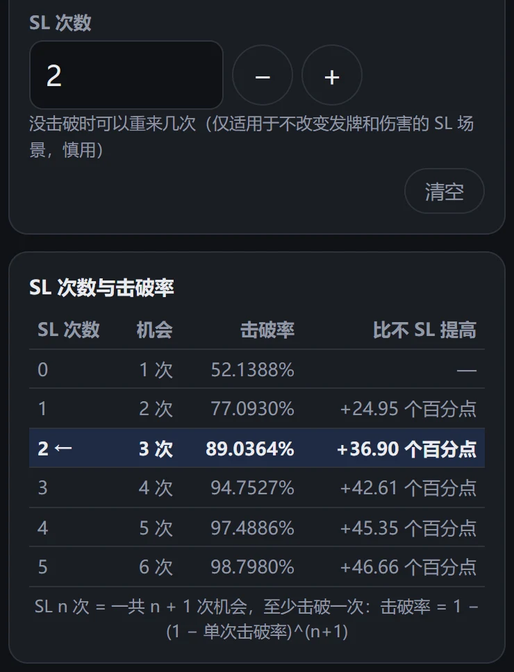
SL 次数填没击破时最多重来几次（也可以点 − / ＋）。SL n 次 = 一共 n + 1 次机会：击破率 = 1 − (1 − 单次击破率)^(n+1)。下面的表列出 SL 0 ~ 5 次的结果，箭头指着你填的次数。
只适用于 SL 后发到的牌不变、只重新抽伤害随机数的情况。要算「换一种出牌顺序再试」这类会改变出牌的 SL，请用综合击破概率。
图表：HP 再高一点还能打死吗？
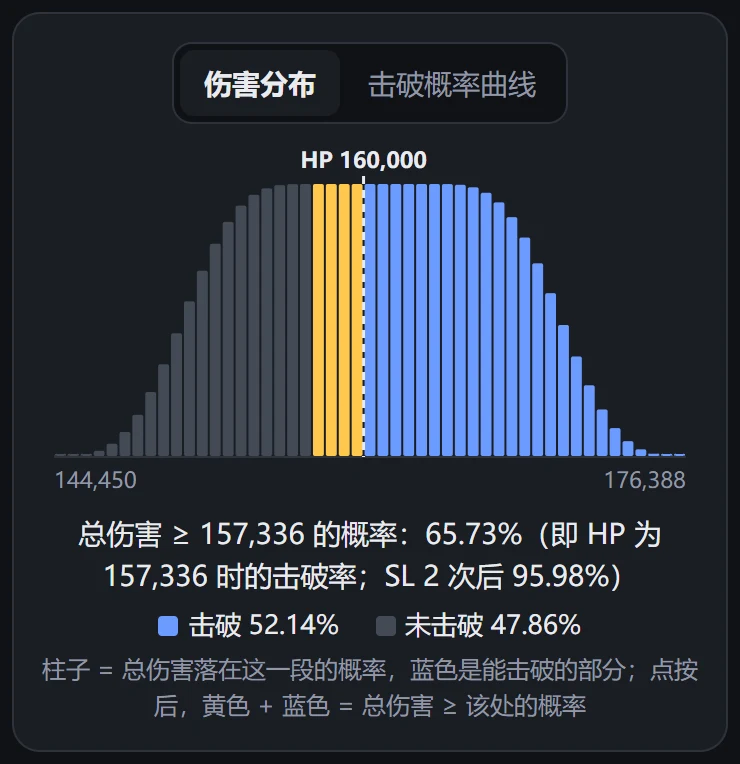
伤害分布：每根柱子是总伤害落在这一段的概率，蓝色是能击破的部分。点按（或左右滑动）图表上任意位置，会显示「总伤害 ≥ 那里的概率」，也就是 HP 为那个数时的击破率。
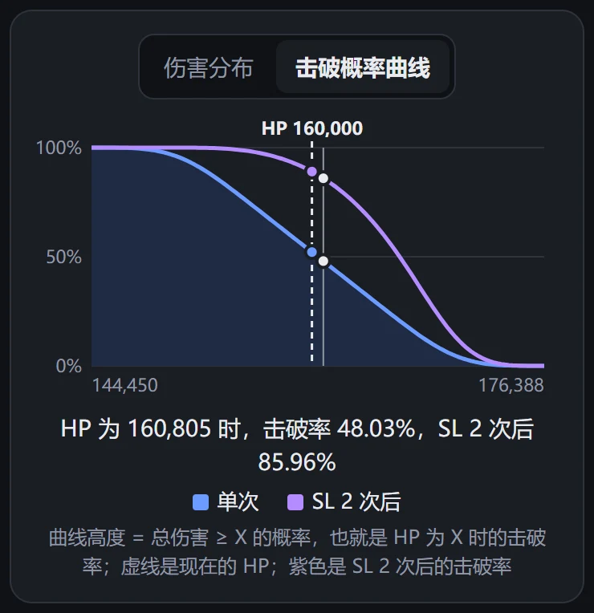
击破概率曲线：横轴是 HP，高度是这个 HP 下的击破率；填了 SL 时紫色曲线是 SL 后的击破率。点按或滑动可以查看任意 HP 的结果，适合回答「HP 多 5,000 还能打吗」。
发牌概率
算发到想要的牌的概率。3 人上场时牌库 15 张，每回合发 5 张，3 个回合发完再洗牌（2 人上场是 10 张、2 个回合）。
基本用法：第 1 回合要发到 BB
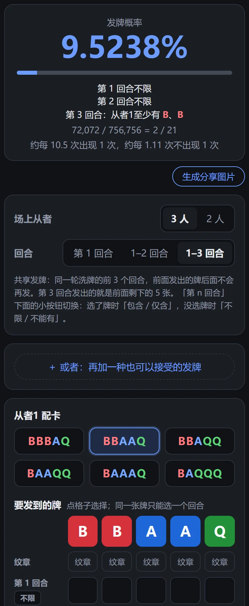
- 场上从者选 3 人或 2 人；回合先选「第 1 回合」。
- 在「从者1 配卡」里选这名从者的配卡。
- 在「第 1 回合」一行点要发到的牌（点一下打勾，再点一下取消）。
- 最上面是发牌概率，下面是「满足条件的种数 / 全部种数」。
包含 / 仅含、不限 / 不能有
「第 n 回合」下面有个小按钮，点它切换这一格的条件：
| 这一格 | 按钮 | 意思 |
|---|---|---|
| 选了牌 | 包含 | 至少发到这些牌，多发也行 |
| 选了牌 | 仅含 | 这名从者发到的牌恰好就是这些，不能多 |
| 没选牌 | 不限 | 这名从者发不发牌都行 |
| 没选牌 | 不能有 | 这名从者一张牌都不能发到 |
连续几个回合：1–2 回合、1–3 回合
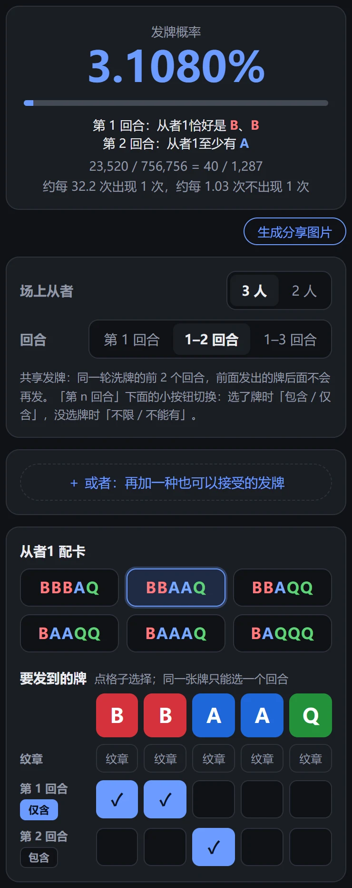
回合选「1–2 回合」或「1–3 回合」时，是同一轮洗牌里几个回合一起算：前面发出去的牌后面不会再发，各回合的条件要同时满足。每个回合一行，在对应的行里点牌。同一张牌只能选在一个回合。
多名从者、纹章
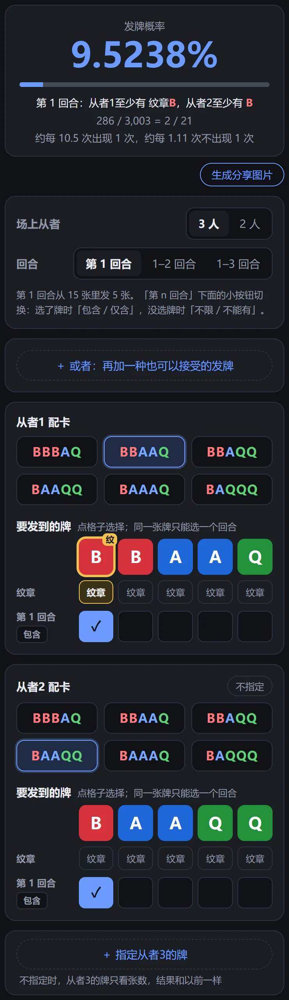
- 点「＋ 指定从者2的牌」「＋ 指定从者3的牌」给其他从者选配卡和要发到的牌。不指定时，他们的牌只看张数（结果不受影响）。不同从者的牌互不替代。
- 纹章：点牌下面的「纹章」，这张牌就只认这一张（例如只有带纹章的那张 B 才行）。同色几张都开纹章时会按 ①②③ 区分。
「或者」：几种发牌都能接受
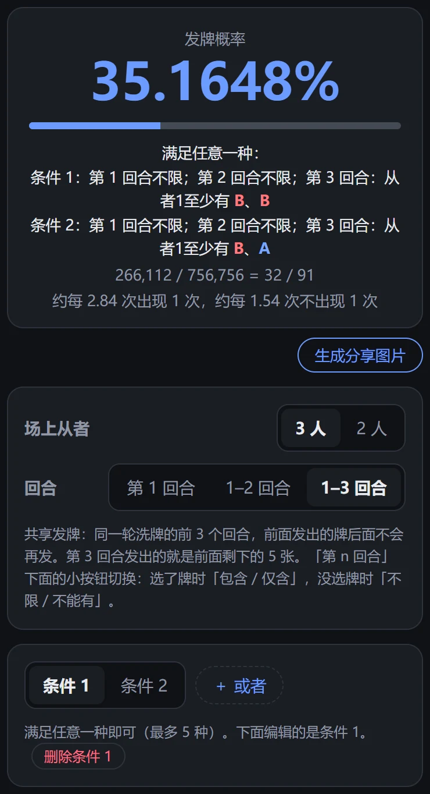
BB 能打、BA 也能打时：
- 先编辑好条件 1。
- 点「＋ 或者」加条件 2（最多 5 种），点「条件 n」切换正在编辑的条件。
- 结果是满足任意一种的概率。
不能把几种条件的概率直接相加：同一手牌可能同时满足好几种，相加会重复计算。这里用容斥原理精确去掉重复的部分。几种牌型的打法、伤害不同时，到综合页按条件分配。
计算过程
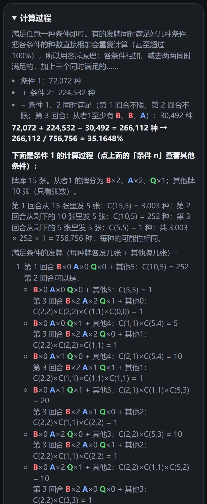
展开页面下方的「计算过程」可以看到每一步：牌库怎么分类、每种满足条件的发牌有几种、怎么相加。想核对结果时很有用。
换人、从者退场、洗牌技能会改变牌库，这一页不算。退场后重新洗牌，请在综合页用新的发牌组表示。
buff 成功率
有些技能不是必中的（魅惑、眩晕、降防……）。一个 buff 组可以放好几个 buff，全部成功才算成功。
普通 buff
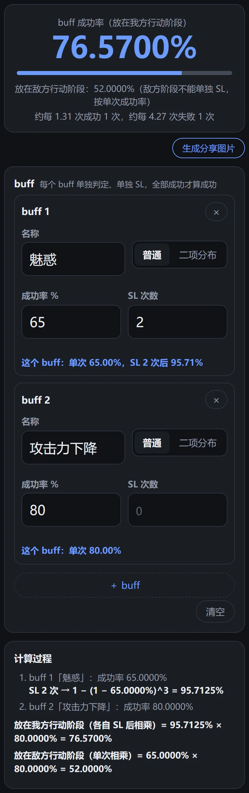
- 名称可以不填（填了在计算过程和综合页里更好认）。
- 成功率 % 填这个 buff 的命中率。
- SL 次数：这个 buff 失败时可以重来几次。技能是一个一个放的，一个失败就 SL 重抽它，成功的保留。
- 「＋ buff」再加一个。最上面是全部成功的概率，每个 buff 下面是它自己的单次和 SL 后的成功率。
二项分布 buff：一个技能判定好几次
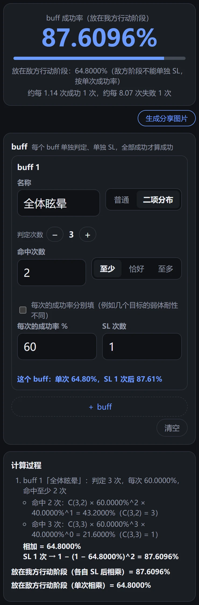
一个技能同时对好几个目标判定（例如全体眩晕、全体魅惑、凯撒宝具加攻）时，选 二项分布：
- 判定次数：判定几次（几个目标）。
- 命中次数 + 至少 / 恰好 / 至多：命中几次才算成功。
- 每次的成功率：几个目标的弱体耐性不同时，勾选「每次的成功率分别填」。
不要把一个全体技能拆成几个普通 buff：SL 时这几次判定是一起重抽的，拆开算会偏高；「至少 2 个」也没法用普通 buff 表示。
两个结果分别用在哪
最上面的大数字是放在我方行动阶段的成功率（每个 buff 各自 SL 后相乘）。下面的小字是放在敌方行动阶段的成功率：敌方阶段（例如送人前的判定）每条世界线只判定一次、不能单独 SL，所以用单次成功率相乘。在综合页放进哪一行，就用哪个结果。
送人概率
敌方行动阶段让敌人把指定的从者打死（送走），这一页算敌方这一回合行动完之后达成要求的概率。
基本用法：一个敌人、送走一名从者
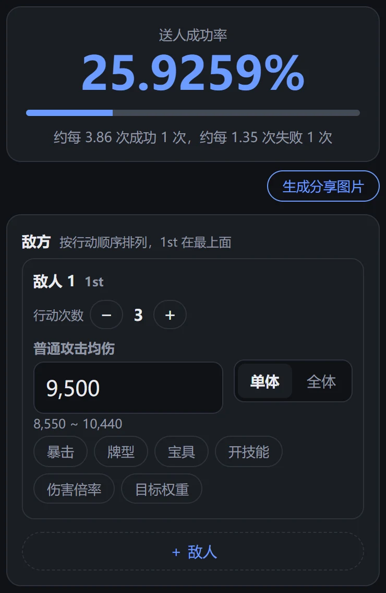
敌方：
- 行动次数：这个敌人这一回合行动几次。
- 普通攻击均伤：敌人打你的从者的平均伤害；选 单体 或 全体。
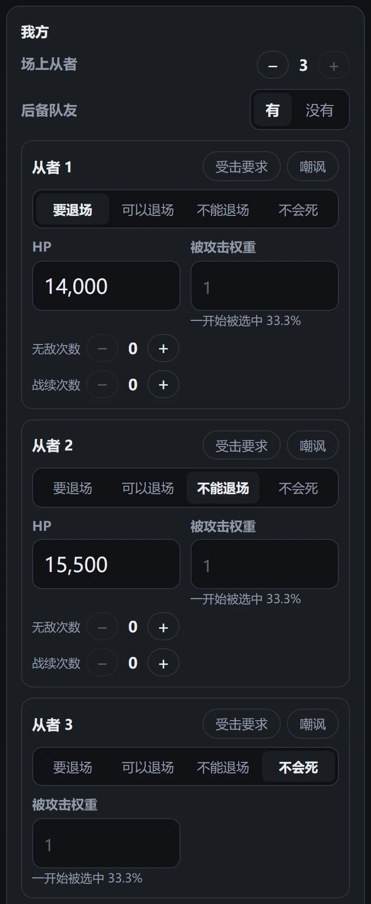
我方：
- 场上从者人数；后备队友有没有（关系到回合会不会中断）。
- 每名从者选一个角色：
- 要退场：这一回合必须被打死，没死就算失败。
- 可以退场：死不死都行。
- 不能退场：死了就算失败。
- 不会死：不用填 HP（例如满血、不可能被打死的从者）。
- 填 HP（剩余血量）；被攻击权重影响敌人选谁打（空着 = 1），下面会显示一开始被选中的概率。
敌人的更多设置
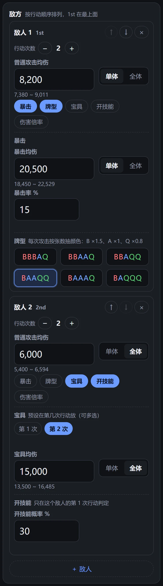
点普通攻击下面的按钮打开对应的设置：
- 暴击：暴击均伤 + 暴击率。
- 牌型：敌人的配卡，每次攻击按各颜色张数 ÷ 5 抽颜色（B ×1.5、A ×1、Q ×0.8）。
- 宝具：选在第几次行动放（可以多选），填宝具均伤；不填 = 无伤害宝具。
- 开技能：敌人第 1 次行动有一定概率开技能（没有伤害，但算一次行动）。
- 伤害倍率：再乘一个倍率。
敌人最多 6 个，按 1st、2nd… 的顺序轮流行动，用右上角的 ↑ ↓ 调整顺序，× 删除。
我方的更多设置
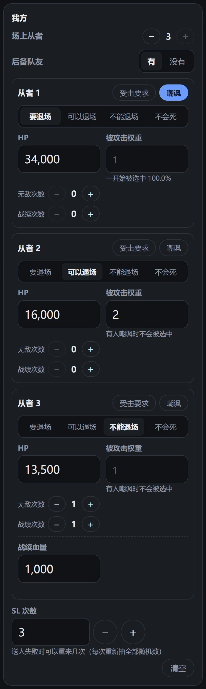
- 嘲讽：场上有嘲讽的从者时，敌人只打有嘲讽的。
- 无敌次数：每次挨打伤害为 0，次数 −1。
- 战续次数：累计伤害达到 HP 时以「战续血量」复活，不算退场。
- 规则细节（战续后的「不合法目标」、回合中断等）见页面底部的「送人规则与使用说明」。
看结果：SL 表和详细结果
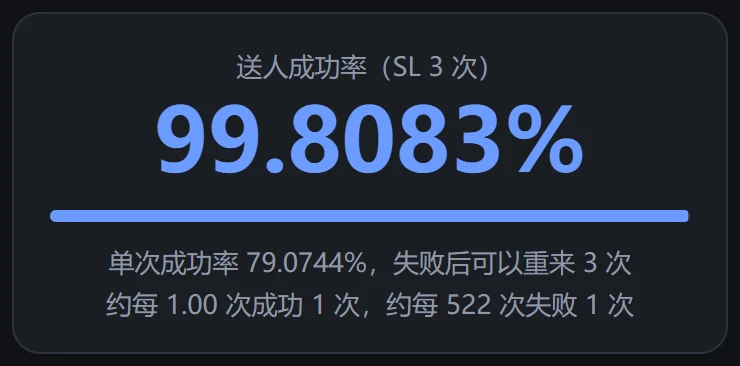
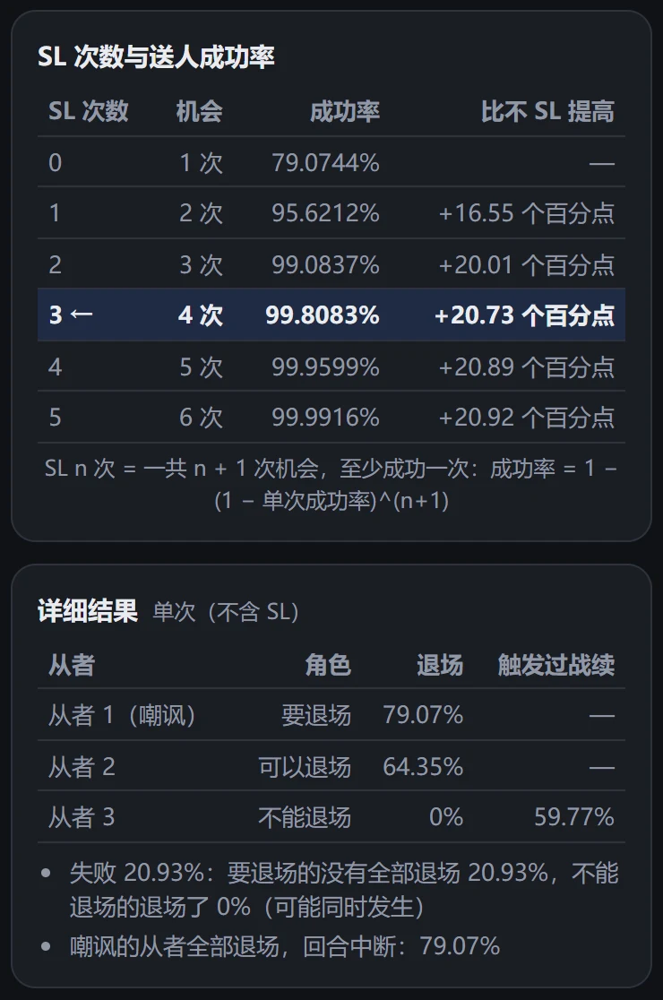
- SL 次数填送人失败时可以重来几次（每次重新抽全部随机数）。
- 详细结果列出每名从者的退场概率、触发战续的概率，以及失败的原因各占多少，方便看问题出在哪。
- 设置特别复杂时精确计算量太大，会改用模拟，并标明「模拟值」和误差。
受击要求：要挨几下（攒 NP、触发被动）
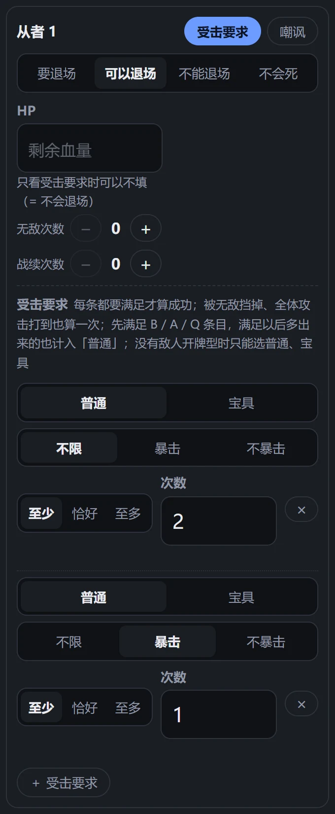
不需要打死、只需要挨打时（例如靠挨打攒 NP）：
- 点从者右上角的 受击要求。
- 每一条 = 类型（B / A / Q / 普通 / 宝具）+ 暴击（不限 / 暴击 / 不暴击）+ 至少 / 恰好 / 至多 n 次。
- 「＋ 受击要求」加更多条，每条都满足才算成功。
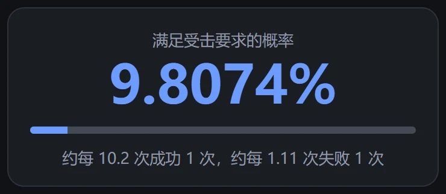
只看受击要求时（没有「要退场」「不能退场」的从者），敌人的均伤、从者的 HP 都可以不填。被无敌挡掉、被全体攻击打到也算挨一下。
综合击破概率
把前面四个页面存好的组放进各个回合，算出整个方案从头到尾成功的概率（包括发牌、buff、击破、送人每一步，以及 SL 怎么用）。
基本用法：把组放进回合
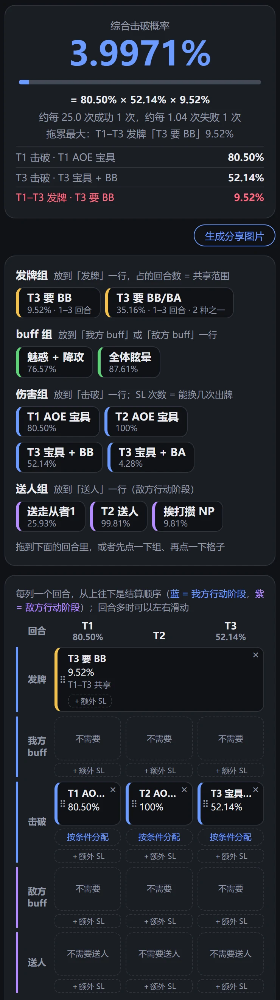
- 先在前面几页把需要的组建好（例如每回合一个伤害组、一个发牌组）。
- 在综合页上方找到这些组，按住拖到下面的格子里；或者先点一下组，再点一下格子。
- 回合表每一列是一个回合，从上往下是结算顺序：发牌 → 我方 buff → 击破 → 敌方 buff → 送人。空着的格子 = 这一步不需要（100%）。
- 最上面是综合击破概率，下面列出各回合的成功率，并标出「拖累最大」的一步。
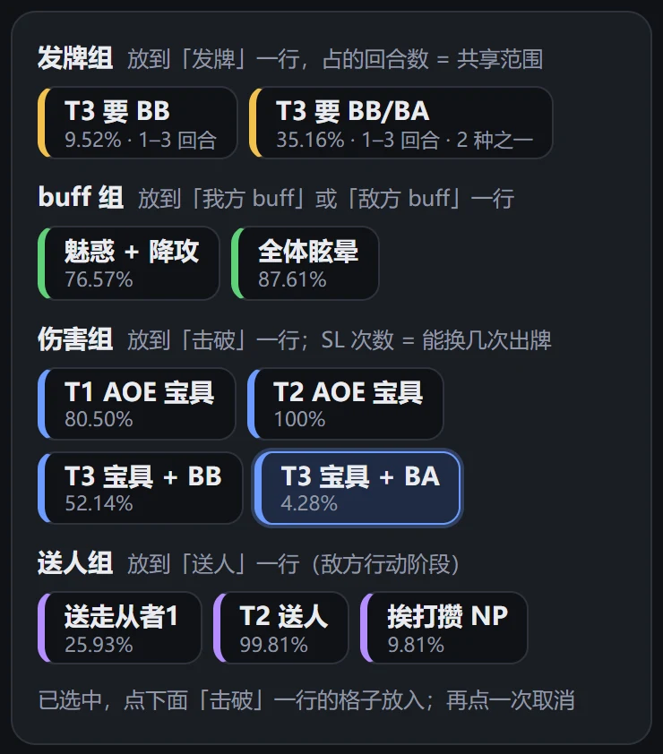
- 放好的组按住左边的 ⠿ 可以拖到别的格子，点 × 移除。
- 底部 − / ＋ 改回合数，「清空方案」清空全部格子。
- 回合多时表格可以左右滑动。
发牌组占几列由它的「回合」设置决定：设成「1–3 回合」的发牌组放在 T1，就覆盖 T1–T3。3 人每 3 回合洗一次牌，有从者退场时下一回合立刻洗牌；发牌组放在不是正常洗牌的回合时会提示「需要前一回合有从者退场」，请自己确认。
加上 buff 和送人
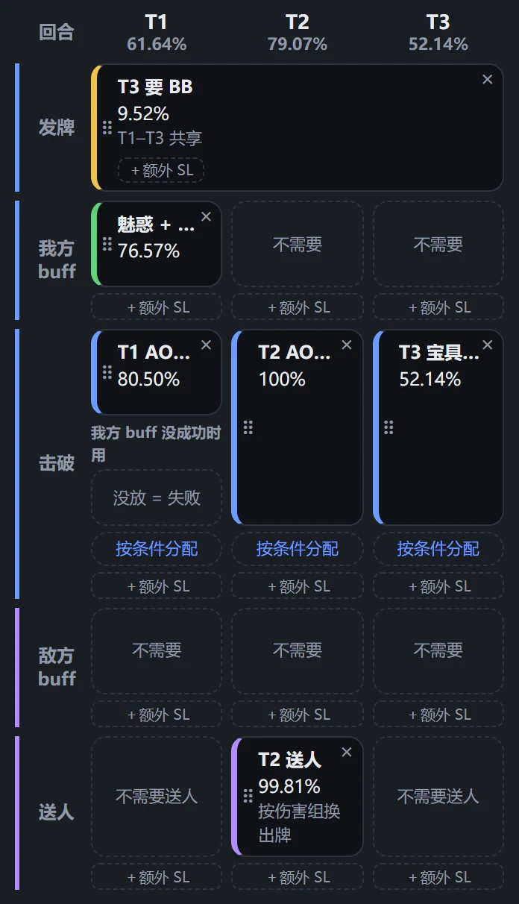
- buff 组可以放进「我方 buff」（我方行动阶段，用 SL 后的成功率）或「敌方 buff」（敌方行动阶段，用单次成功率）。
- 放了我方 buff 后，击破格下面会多出「我方 buff 没成功时用」：buff 没挂上时改用哪个伤害组（空着 = 失败）。敌方 buff 和送人也一样。
- 送人组放进「送人」一行。击破失败时换出牌重来，会连着送人一起重新判定，所以送人格会注明「按伤害组换出牌」。
按条件分配：不同的牌用不同的打法
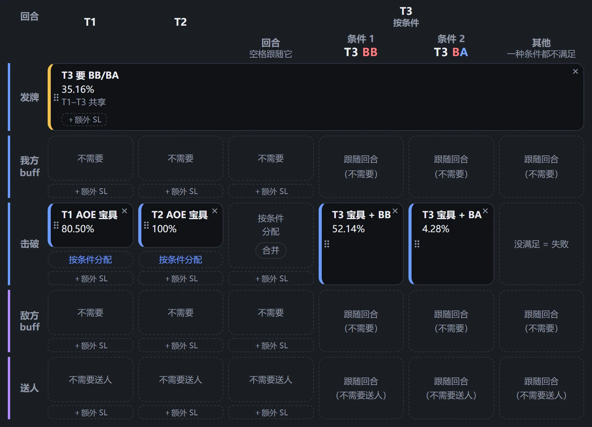
发牌组用了「或者」（例如 BB 或 BA 都行），而两种牌的伤害不一样时：
- 在被这个发牌组覆盖的回合，点击破格下面的「按条件分配」。
- 这一列分成「回合 / 条件 1 / 条件 2 … / 其他」几小列，每小列从上往下就是一种打法。
- 把每种条件对应的伤害组放进去。条件格空着 = 不需要击破；「其他」（一种条件都不满足）空着 = 失败。
- 点「合并」变回一列。
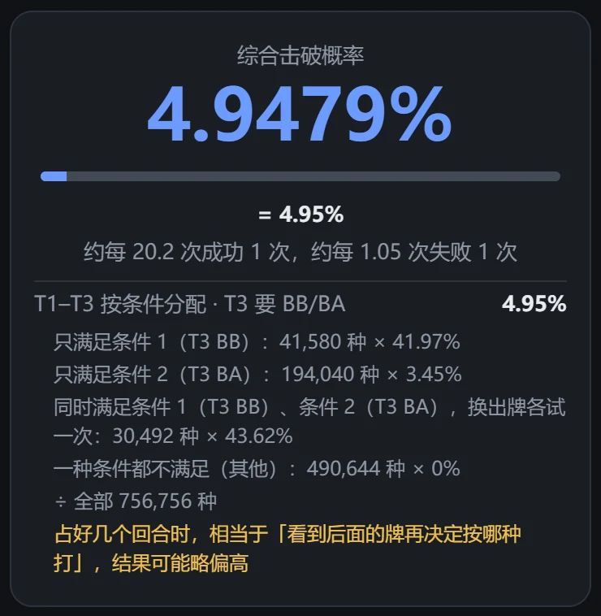
同时满足好几种条件的手牌，会把不同的打法各试一遍（任意一种成功即可）。
额外 SL 和全局额外 SL
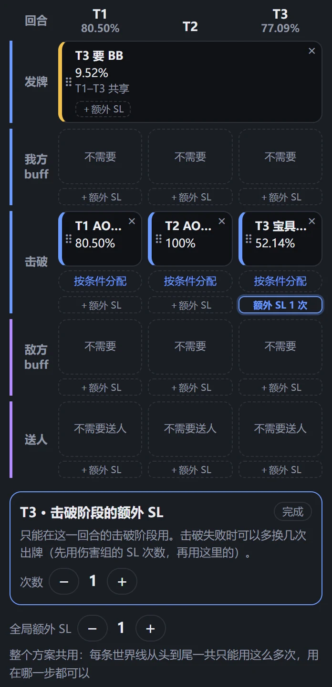
- 每个格子下面的「＋额外 SL」：给这一回合的这个阶段多几次 SL，只能用在这里。发牌组下面也有，用来在看到牌之后重新发牌。
- 「全局额外 SL」：整个方案共用，每条世界线从头到尾一共只能用这么多次，用在哪一步都可以（程序会选最好的用法）。
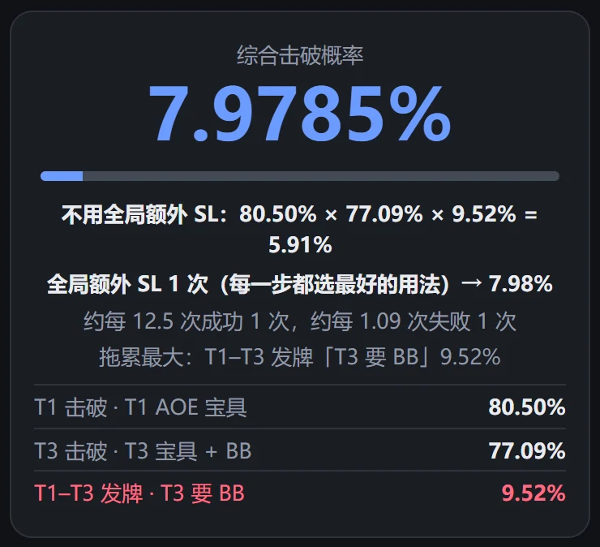
计算过程
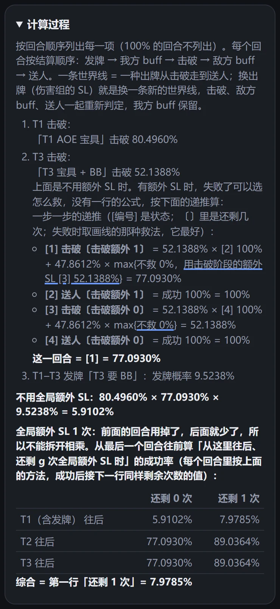
展开「计算过程」可以看到每个回合、每一步的成功率怎么来的。完整规则见 GitHub 上的《世界线规则》。
工作目录与分享
工作目录：保存整套设置
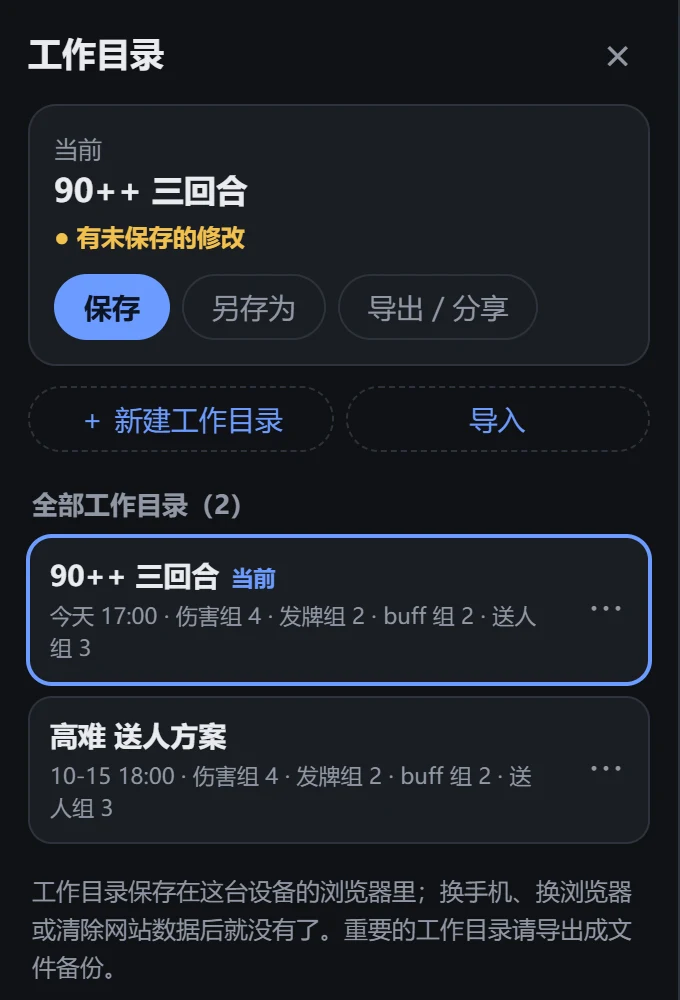
点左上角的 工作目录。一个工作目录 = 全部伤害组、发牌组、buff 组、送人组和综合页的方案。
- 保存：存进当前工作目录。有没保存的修改时，左上角按钮上会有小圆点。
- 另存为 / ＋ 新建工作目录：一套方案一个工作目录，随时切换。切换时如果有没保存的修改，会先问你要不要保存。
- 每个工作目录右边的 ⋯：改名、导出、删除。
工作目录只保存在这台设备的浏览器里。换手机、换浏览器、清除网站数据后就没有了，重要的请导出成文件备份。
导出：发给别人或备份
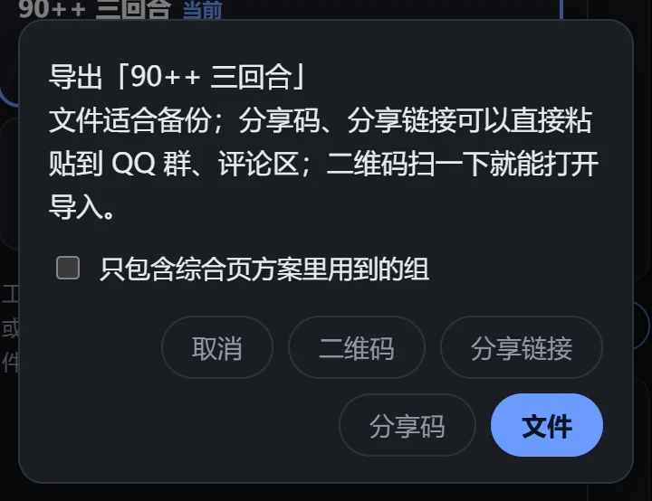
- 文件：保存成
.json文件，适合备份。 - 分享码 / 分享链接：一段文字，可以直接贴到 QQ 群、评论区。对方打开链接就会进入导入。
- 二维码：对方扫一下就能打开导入，也可以保存成图片发出去。
- 勾选「只包含综合页方案里用到的组」可以让分享码更短。
导入别人的设置
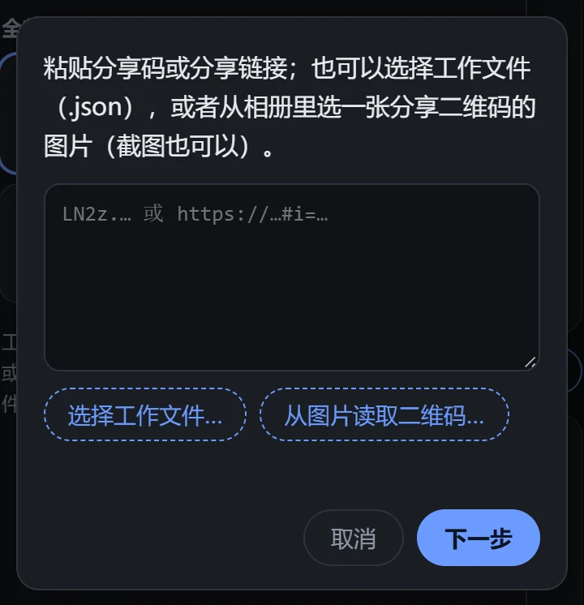
点工作目录里的 导入：粘贴分享码或链接，或者「选择工作文件…」，或者「从图片读取二维码…」（直接从相册选二维码截图，不需要相册权限）。然后选：
- 作为新的工作目录打开：不影响你现在的内容。
- 合并到当前：把对方的组加进你现在的工作目录（你的方案不变）。
分享图片：发一张结果截图
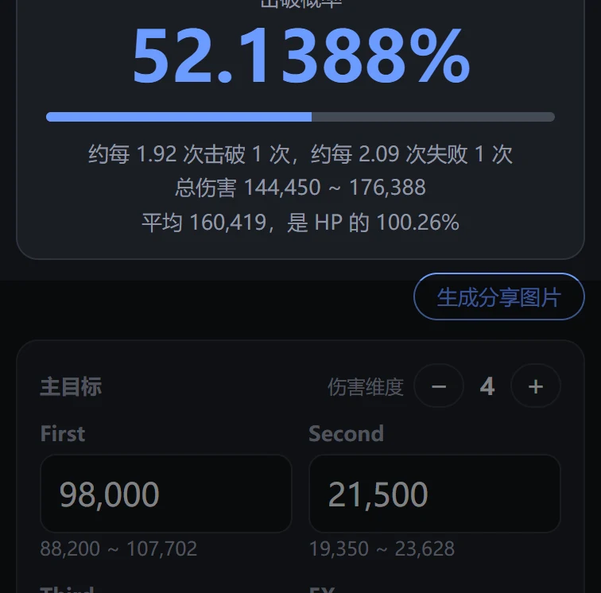
每一页结果下面都有「生成分享图片」，把这一页的主要输入和结果排成一张整齐的图片，可以保存或复制后发给别人。想让别人导入同样的设置，请用上面的导出。
常见问题
结果和 Excel 计算器对不上？ 本工具每张卡的伤害按「向下取整(均伤 × 随机数)」计算，取整方式和 Excel 计算器相同；请检查均伤是否已经扣掉固伤、HP 是否已经减去固伤之和。
数据会不会丢？ 输入自动保存在这台设备的浏览器里。清除浏览器数据、在 iPhone 上删掉桌面图标都会清空，请定期在工作目录里导出文件备份。
断网能用吗？ 能。打开过一次（或添加到主屏幕）之后，断网也能用，计算全部在本机完成。